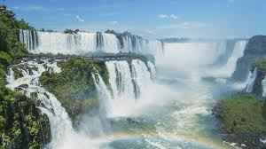

Impactos nas Cataratas do Iguaçu

O impacto nas Cataratas do Iguaçu e seus principais calsadores
Os Problemas Redução do Fluxo de Água: Causada pela construção de hidrelétricas e secas prolongadas, afetando a beleza e a saúde do ecossistema. Desmatamento: A expansão urbana e a exploração de recursos naturais estão destruindo a vegetação nativa e ameaçando a biodiversidade local. Poluição: O lixo gerado pelo turismo e a poluição das águas comprometem o meio ambiente ao redor das cataratas. Turismo Descontrolado: O aumento do número de visitantes sem planejamento adequado está sobrecarregando a infraestrutura e prejudicando a natureza. Mudanças Climáticas: Alterações no clima, como secas mais intensas e variação no regime de chuvas, afetam o fluxo de água e o ecossistema. Impactos Socioeconômicos: A degradação ambiental pode prejudicar a economia local, que depende do turismo, da pesca e de outras atividades relacionadas ao rio.
ConsequênciasA importância das Cataratas do Iguaçu vai além de seu valor ecológico; elas representam uma grande fonte de turismo e emprego para a região. A redução da atratividade visual das quedas d'água, causada pela diminuição do fluxo de água, pode afetar negativamente o turismo. Isso impactaria diretamente a economia local, afetando hotéis, restaurantes, guias turísticos e diversos outros setores que dependem do turismo para sua sustentabilidade.
Conclusão A preservação das Cataratas do Iguaçu exige ações coordenadas entre governos, empresas e a sociedade civil. A conscientização sobre os impactos ambientais e o investimento em estratégias de preservação, como o manejo sustentável do turismo, a proteção da vegetação nativa e o controle das emissões de gases de efeito estufa, são essenciais para garantir que essa maravilha natural continue a ser um símbolo de beleza e biodiversidade para as gerações futuras. O futuro das Cataratas do Iguaçu depende de um equilíbrio entre o desenvolvimento sustentável e a preservação ambiental.